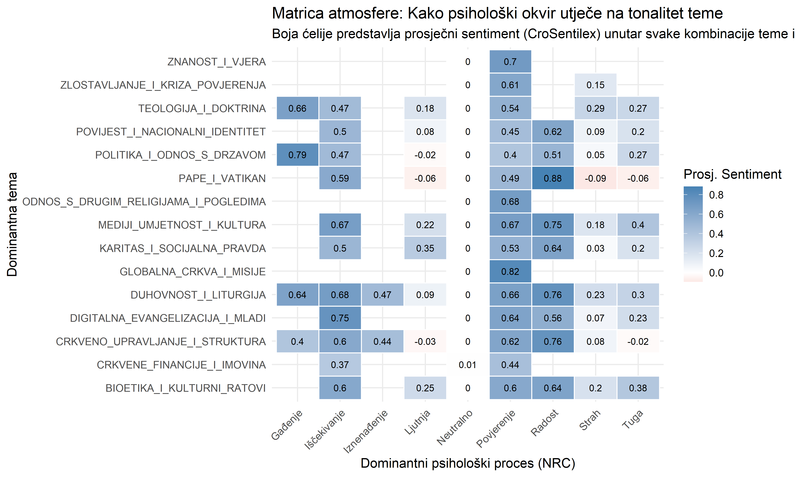
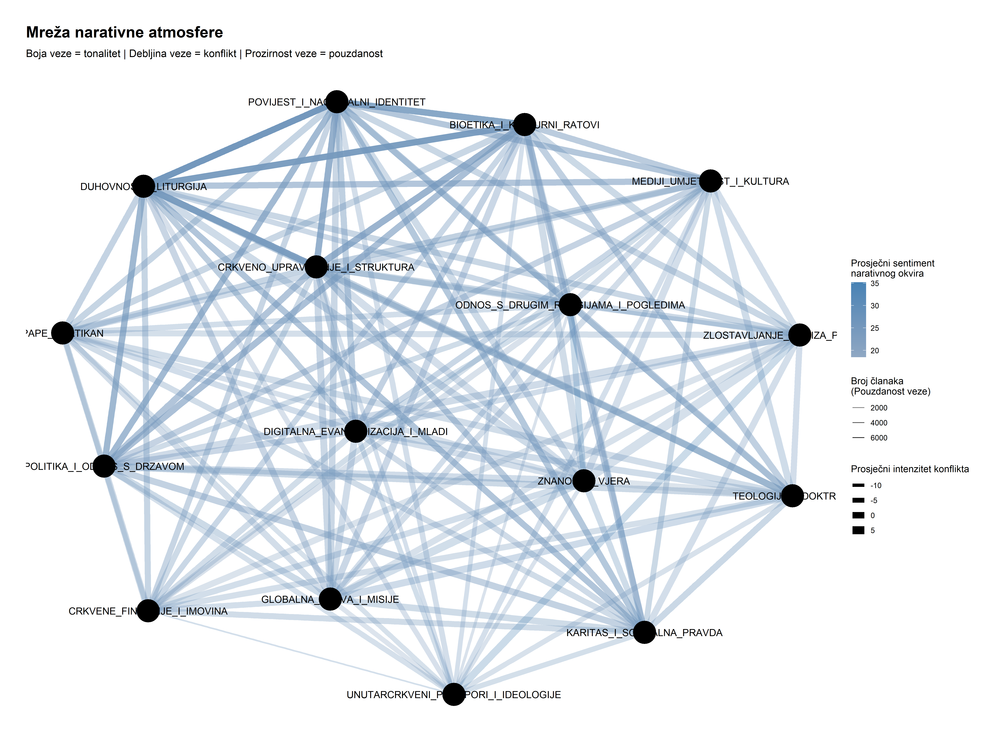

Emocionalna i konfliktna mapa katoličkog digitalnog prostora (2021-2025)
Uvod u analizu emocionalne i konfliktne strukture diskursa
Nakon kartografiranja aktera i platformi te identifikacije tematskih kategorija, ova treća analitička faza usmjerava se na najsuptilniju, ali kritičnu dimenziju diskursa. Istraživanje se bavi pitanjem atmosfere komunikacijskog prostora, odnosno načina na koji se teme artikuliraju. Fokus je na emocionalnom tonalitetu, psihološkim apelima i intenzitetu konfliktnog jezika koji karakterizira različite narativne okvire.
Ovaj pristup nadilazi tradicionalne binarne klasifikacije sentimenta, uvodeći višeslojne, kontekstualno svjesne metrike koje omogućuju dubinsko razumijevanje komunikacijskih strategija. Analitički okvir strukturiran je u tri komponente.
Prvo, dvoslojna emocionalna analiza koja razdvaja površinski tonalitet teksta od dubinskih psiholoških procesa koji se u njemu aktiviraju. Drugo, Relativni indeks konflikta koji mjeri neočekivanu agresivnost jezika u odnosu na kontekstualne baseline karakteristike medija i teme. Treće, Mreža narativne atmosfere koja vizualizira kako se emocionalni tonalitet i intenzitet konflikta mijenjaju kada se različite tematske kategorije kombiniraju u šire narativne okvire.
Dvoslojna emocionalna analiza atmosfere diskursa
Za precizno razumijevanje atmosfere potrebno je razlikovati dva analitička nivoa. Prvi je tonalitet, odnosno pozitivna ili negativna valencija teksta mjerena leksičkim sentimentom. Drugi su psihološki procesi, odnosno emocionalni okviri poput straha, nade, povjerenja ili ljutnje kroz koje se poruka artikulira i koji aktiviraju specifične kognitivne i afektivne odgovore kod publike.
Matrica tonaliteta i psiholoških procesa
Sljedeća vizualizacija predstavlja dvodimenzionalnu matricu koja prikazuje interakciju između tematskih kategorija i psiholoških procesa. Boja svake ćelije označava prosječni tonalitet tekstova koji pripadaju kombinaciji određene teme i emocionalnopg okvira. Plave nijanse označavaju pozitivan tonalitet, crvene nijanse negativan, dok desni stupac agregira prosječni sentiment svake tematske kategorije.
Ova matrica otkriva sofisticirane mehanizme medijskog uokvirivanja i donosi nekoliko ključnih analitičkih uvida.
Prvi, kontekstualna ovisnost tonaliteta. Tonalitet pojedine tematske kategorije nije inherentna karakteristika sadržaja, već rezultat strateškog izbora emocionalnog okvira. Gotovo sve tematske kategorije manifestiraju negativan tonalitet kada su artikulirane kroz psihološke okvire Ljutnje, Straha ili Tuge. Nasuprot tome, okviri Povjerenja, Radosti i Iščekivanja gotovo univerzalno proizvode pozitivan tonalitet. Ovo potvrđuje da mediji ne prenose neutralne informacije, već aktivno konstruiraju atmosferu strateškim odabirom emocionalnog ključa.
Drugi, identifikacija kritičnih narativnih zona. Tematske kategorije poput Pape i Vatikan te Politika i odnos s državom pokazuju najveći raspon sentimenata, od izrazito negativnih do izrazito pozitivnih. Ove kategorije predstavljaju ključna bojna polja narativa gdje izbor emocionalnog okvira ima najsnažniji učinak na oblikovanje percepcije publike.
Treći, paradoksalna uloga emocije Gađenja. Analiza otkriva fascinantnu asimetriju. Kada je Gađenje usmjereno prema temi Politike i odnosa s državom, najvjerojatnije u kontekstu kritike političke korupcije ili nemoralnosti, rezultira pozitivnim sentimentom koji signalizira moralnu osudu. Međutim, kada je ista emocija usmjerena prema temi Pape i Vatikan, u kontekstu unutarcrkvenih skandala ili problema, generira najnegativniji sentiment u cijeloj matrici.
Ljutnja u temama poput Politike i odnosa s državom nije samo statistička pojava. Ona odražava stvarne komunikacijske dinamike u hrvatskim medijima, posebno u raspravama oko crkvenih komentara na zakonske prijedloge ili političke odluke. Publika izražava frustraciju i neslaganje kroz specifične obrasce interakcije, uključujući kritičke komentare, dijeljenja sadržaja s negativnim tonalitetom i reakcije koje signaliziraju ljutnju. Ova ljutnja predstavlja manifestaciju dubljih društvenih tenzija oko odnosa između religijske i sekularne sfere, gdje crkveni stavovi prema političkim pitanjima često postaju katalizatori polarizacije.
Relativni indeks konflikta kao kontekstualno prilagođena metrika
Tradicionalne metrike intenziteta konflikta ne uzimaju u obzir kontekstualne baseline karakteristike. Korištenje konfliktnog vokabulara u članku o povijesnim ratnim događajima nije ekvivalentno njegovoj uporabi u članku o liturgijskim praksama. Relativni indeks konflikta predstavlja metodološku inovaciju koja mjeri koliko je pojedini tekst neočekivano agresivniji ili pomirljiviji od baseline očekivanja temeljenog na prosječnom diskursu njegovog izvora i njegove tematske kategorije.
Tipologija medijskih strategija konfliktnog diskursa
Sljedeći grafikon koristi Relativni indeks konflikta za identifikaciju i klasifikaciju medijskih strategija u korištenju konfliktnog jezika. Horizontalna os predstavlja prosječnu, baznu razinu konfliktnog jezika karakterističnu za svaki medij. Vertikalna os predstavlja varijabilnost u korištenju konfliktnog jezika, mjerenu standardnom devijacijom RCI vrijednosti. Veličina točke označava ukupnu prisutnost medija u korpusu.

Ova vizualizacija otkriva postojanje četiri fundamentalno različita modela komunikacijske strategije u hrvatskom digitalnom prostoru.
Prvi model, strateški eskalatori, pozicioniran u gornjem desnom kvadrantu, okuplja gustu skupinu velikih mainstream medija, uključujući index.hr, 24sata.hr i dnevnik.hr. Ovaj model karakterizira visoka prosječna razina konfliktnog jezika kombinirana s visokom varijabilnosti. Ovi mediji prakticiraju sofisticirano doziranje konflikta, koristeći ga selektivno i intenzivno kada žele maksimizirati angažman publike, dok u drugim situacijama održavaju umjereniji tonalitet. Primjer je portal index.hr koji vješto koristi konfliktni diskurs za privlačenje pažnje kroz senzacionalizirane naslove o crkvenim skandalima ili kontroverznim izjavama crkvenih velikodostojnika, dok istovremeno objavljuje i umjerenije informativne sadržaje.
Drugi model, dosljedni kritičari, smješten u donjem desnom kvadrantu, obuhvaća desno orijentirane i aktivističke portale poput narod.hr, dnevno.hr i dragovoljac.com. Njihova komunikacijska strategija karakterizirana je konstantno visokom razinom konfliktnosti uz nisku varijabilnost. Ovi mediji ne prakticiraju stratešku modulaciju tonaliteta, već održavaju dosljedan kritički i konfrontirajući diskurs kao temeljnu karakteristiku svog uređivačkog identiteta.
Treći model, pragmatični promatrači, okuplja tradicionalne medije poput vecernji.hr, slobodnadalmacija.hr i hrt.hr. Ovi mediji karakterizirani su umjerenom prosječnom razinom konfliktnosti, ali visokom nepredvidljivošću, što ukazuje na sposobnost fleksibilne prilagodbe tonaliteta ovisno o prirodi događaja. Zadržavaju kapacitet za intenzivnu eskalaciju konfliktnog diskursa kada procijene da to zahtijeva javni interes ili novinska vrijednost događaja.
Četvrti model, graditelji zajednice, pozicioniran u donjem lijevom kvadrantu, pripada vjerskim medijima i specijaliziranim YouTube kanalima, uključujući hkm.hr, laudato.hr i LaudatoTV. Ovaj model manifestira dijametralno suprotnu strategiju od svih prethodnih, karakteriziranu dosljednom niskom razinom konfliktnosti i niskom varijabilnosti. Ovi mediji fokusirani su na informiranje, edukaciju i izgradnju zajednice, grade pozitivnu atmosferu kroz priče o duhovnom rastu, zajedništvu i pastoralnim aktivnostima, sustavno izbjegavajući konfrontirajući diskurs.
Mreža narativne atmosfere
Konačna sinteza integrira sve analitičke dimenzije u jednu kompleksnu mrežnu vizualizaciju. Mreža prikazuje kako se različite tematske kategorije povezuju u šire narativne okvire, dok vizualne karakteristike svake veze otkrivaju atmosferske osobine tih narativnih kombinacija.
Boja veze označava prosječni tonalitet, gdje plave nijanse označavaju pozitivno obojene narativne spojeve, a crvene nijanse negativno obojene. Debljina veze označava prosječni intenzitet konfliktnog jezika, gdje deblje linije upućuju na konfliktnije narative. Prozirnost veze označava pouzdanost veze, mjerenu brojem tekstova na kojima se temelji analiza, gdje tamnije linije predstavljaju statistički robusnije nalaze.

Vizualizacija mreže otkriva temeljnu strukturu hrvatskog katoličkog digitalnog prostora kroz prizmu atmosfere i konflikta.
Prvi ključni nalaz je postojanje dva jasno razgraničena narativna svijeta. Prvi je društveno politička arena, smještena u lijevom i donjem dijelu mreže. Ovaj prostor karakterizira gusta isprepletenost tematskih kategorija Politike i odnosa s državom, Povijesti i nacionalnog identiteta, Bioetike i kulturnih ratova te Unutarcrkvenih prijepora i ideologija. Veze između ovih kategorija manifestiraju izrazitu debljinu, što signalizira visok intenzitet konfliktnog jezika. Ovo predstavlja epicentar svih narativnih prijepora i kulturalnih ratova koji karakteriziraju hrvatski katolički digitalni prostor.
Drugi narativni svijet je pastoralno institucionalna jezgra, pozicionirana u gornjem i desnom dijelu mreže. Ovdje se grupiraju teme Duhovnosti i liturgije, Teologije i doktrine te Crkvenog upravljanja i strukture. Veze unutar ovog klastera karakterizirane su znatno manjom debljinom, što upućuje na značajno nižu razinu konfliktnosti. Ovaj prostor predstavlja svijet unutarcrkvenih, doktrinalnih i duhovnih rasprava, vođenih primarno kroz informativni i edukativni diskurs.
Drugi ključni nalaz odnosi se na ulogu konfliktnog jezika kao primarnog diferencijatora narativnih okvira. Iznenađujući je gotovo potpun nedostatak negativno obojenih veza u mreži. To ne implicira odsutnost kritičkog diskursa, već sugerira da intenzitet konfliktnog jezika, vizualiziran debljinom veze, predstavlja ključniju dimenziju razlikovanja narativa od tonaliteta. Najdeblje i najtamnije linije, koje predstavljaju najpouzdanije i najkonfliktnije narativne spojeve, jasno povezuju tematske kategorije Bioetike i kulturnih ratova, Politike i odnosa s državom, Pape i Vatikana te Povijesti i nacionalnog identiteta. Ovaj četverokut predstavlja primarno bojište narativnih prijepora gdje se odvijaju najintenzivnije medijske rasprave.
Treći ključni nalaz je identifikacija tematskih kategorija koje funkcioniraju kao mostovi između dva narativna svijeta. Teme poput Crkvenog upravljanja i strukture te Digitalne evangelizacije i mladih pozicionirane su centralno u mreži i održavaju snažne veze prema objema stranama. Međutim, ova dva narativna svijeta nisu samo strukturno odvojena, oni se i aktivno dodiruju i prožimaju kroz ove mostovne kategorije. Konfliktni diskurs iz političkog i bioetičkog klastera može prelijevati se u pastoralni mir, ilustrirajući dinamičnost i fluidnost digitalnih rasprava u hrvatskom katoličkom prostoru. Primjerice, rasprave o crkvenom upravljanju često postaju arena gdje se politički konflikti i unutarcrkvene ideološke podjele manifestiraju, transformirajući nominalno institucionalnu temu u žarište prijepora. Ovi mostovi nisu samo pasivni prijelazi, već aktivna područja transformacije atmosfere gdje se narativni okviri rekonfiguriraju.
Sinteza nalaza i zaključne implikacije
Dubinska analiza emocionalne i konfliktne strukture katoličkog digitalnog prostora u Hrvatskoj razotkriva kompleksnu sliku koja transcendira jednostavne dihotomije. Rezultati istraživanja upućuju na postojanje sofisticiranih komunikacijskih strategija i dubinskih strukturnih obrazaca koji oblikuju način artikulacije vjere i Crkve u javnom diskursu.
Tri fundamentalna nalaza se izdvajaju kao ključni za razumijevanje atmosfere diskursa.
Prvi, kontekstualno posredovano oblikovanje tonaliteta. Istraživanje je empirijski verificiralo da tonalitet pojedine tematske kategorije nije inherentna karakteristika sadržaja, već rezultat strateškog emocionalnog uokvirivanja. Identičan sadržaj može biti artikuliran kao pozitivan ili negativan ovisno o psihološkim apelima koje medij aktivira, bilo da su to okviri Povjerenja i Radosti ili Ljutnje i Straha. Ovaj nalaz potvrđuje teorijsku poziciju da mediji ne funkcioniraju kao pasivni prenositelji informacija, već kao aktivni konstruktori atmosfere kroz stratešku selekciju emocionalnih ključeva.
Drugi, tipologija medijskih strategija konfliktnog diskursa. Istraživanje je identificiralo četiri fundamentalno različite komunikacijske strategije u korištenju konfliktnog jezika, koje grubo koreliraju s tipologijom medijskih izvora. Strateški eskalatori, reprezentativni za mainstream medije, prakticiraju sofisticirano doziranje konflikta. Dosljedni kritičari, karakteristični za aktivističke portale, koriste konfliktni diskurs kao temeljni identitetski marker. Pragmatični promatrači, karakteristični za tradicionalne medije, održavaju uravnotežen pristup uz kapacitet fleksibilne eskalacije. Graditelji zajednice, karakteristični za vjerske medije, sustavno izbjegavaju konfliktni diskurs fokusirajući se na informiranje i zajednicu.
Treći, strukturna bifurkacija diskursnog prostora. Najvažniji nalaz, vizualiziran kroz mrežu narativne atmosfere, jest postojanje dva strukturno i atmosferski razgraničena tematska svijeta. Prvi, društveno politički, karakteriziran visokim intenzitetom konflikta i isprepletanjem tema politike, povijesti i bioetike. Drugi, pastoralno institucionalni, karakteriziran niskim konfliktom i fokusom na duhovnost i unutarcrkvena pitanja. Ova bifurkacija nije apsolutna, već je posredovana mostovnim kategorijama koje omogućuju prelijevanje atmosfere između svjetova.
Ovi nalazi demonstriraju nužnost korištenja višeslojnih, kontekstualno prilagođenih analitičkih metoda koje mogu dekodirati suptilne komunikacijske strategije. Razumijevanje ovih strategija ključno je za interpretaciju javne percepcije Crkve i vjere u Hrvatskoj te za osmišljavanje učinkovitih komunikacijskih intervencija.
Buduće faze istraživanja usmjerit će se na temporalnu dinamiku atmosfere kroz detekciju kritičnih događaja te na detaljniju analizu specifičnih fraza i narativnih struktura koje dominiraju najkonfliktnijim tematskim kategorijama. Krajnji cilj ostaje stvaranje dinamičkog digitalnog opservatorija koji će omogućiti praćenje i analizu atmosfere katoličkog digitalnog prostora u stvarnom vremenu, pružajući tako kontinuirani uvid u ove važne društvene procese.